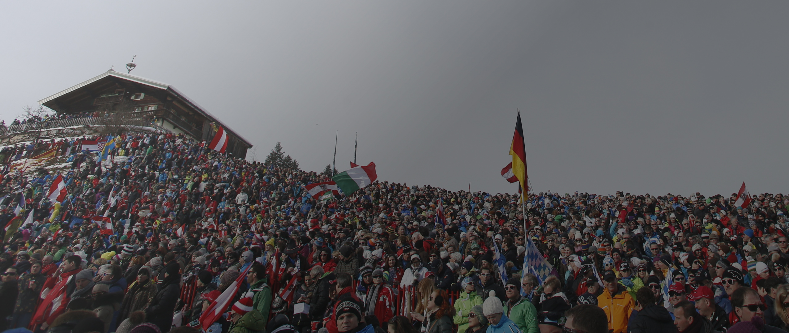
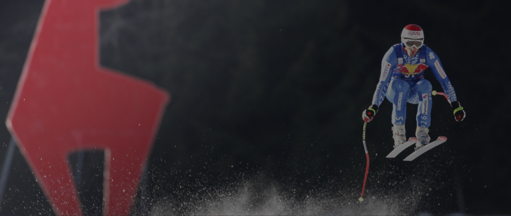
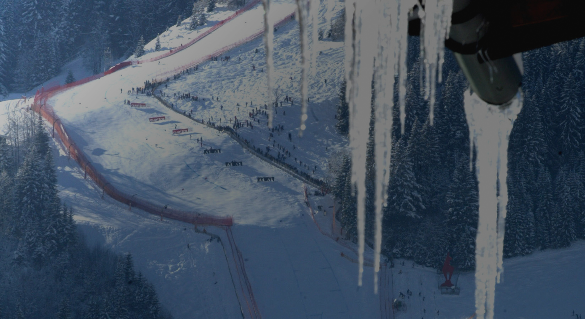

HAHNENKAMMRENNEN
Ein Klassiker feiert Jubiläum
In Kitzbühel werden heuer die 75. Hahnenkammrennen zelebriert. Speziell die Abfahrt auf der Streif ist von einer im Ski-Weltcup einzigartigen Aura aus Faszination und Furcht umgeben, nirgendwo sonst legen die Rennfahrer so viel Respekt an den Tag wie zwischen Mausefalle und Hausbergkante.
Von Senta Wintner
Technische Umsetzung: Katharina Klotz